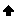
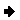
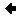
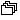
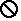

|
 |
Dock above: If the mouse button is released when a dock above cursor is displayed, the view will appear above the view underneath the cursor. |
|
|
Dock below: If the mouse button is released when a dock below cursor is displayed, the view will appear below the view underneath the cursor. |
|
 |
Dock to the right: If the mouse button is released when a dock to the right cursor is displayed, the view will appear to the right of the view underneath the cursor. |
|  | Dock to the left: If the mouse button is released when a dock to the left cursor is displayed, the view will appear to the left of the view underneath the cursor. |
|  | Stack: If the mouse button is released when a stack cursor is displayed, the view will appear as a tab in the same pane as the view underneath the cursor. |
|  | Restricted: If the mouse button is released when a restricted cursor is displayed, the view will not dock there. For example, a view cannot be docked in the editor area. |